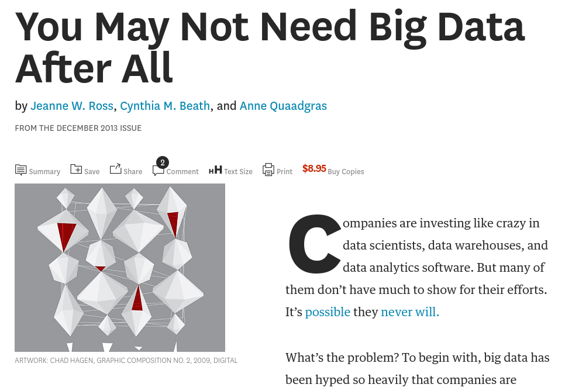
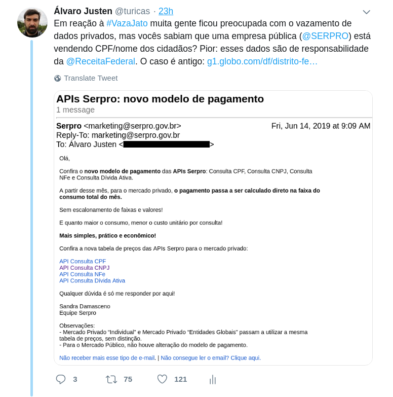
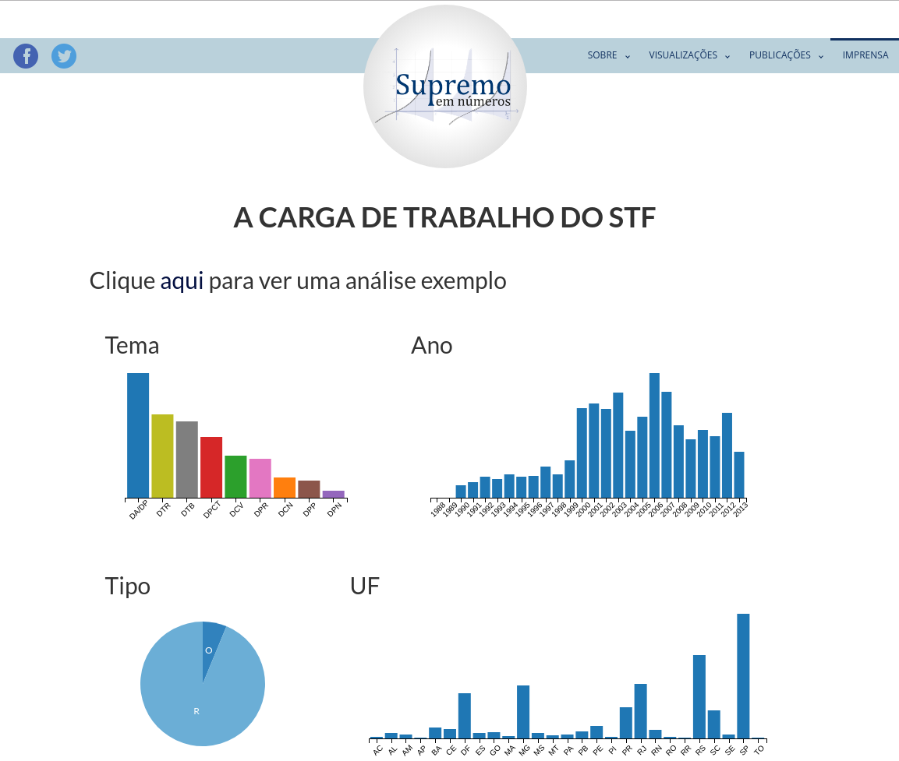

Realmente precisamos de big data?
Álvaro Justen
Encontro GEDAI
15 junho de 2019 - Curitiba/PR 
$ whoami
Turicas, prazer! =)
Sigam-me os bons:
{twitter,
github,
youtube,
slideshare,
instagram}
/turicas
turicas@brasil.io
Brasil.IO
“ Restringir acesso a dados públicos é elitizar a democracia. ”
Curso para 3.000+ jornalistas

O que é big data?
“ Big data is a field that treats ways to analyze, systematically extract information from, or otherwise deal with data sets that are too large or complex to be dealt with by traditional data-processing application software. ”-- Wikipedia
Dados Abertos
“ Dados abertos são dados que podem ser livremente usados, reutilizados e redistribuídos por qualquer pessoa - sujeitos, no máximo, à exigência de atribuição da fonte e compartilhamento pelas mesmas regras. ”-- OpenData Handbook (definição de Open Definition)
Mais detalhes:
Startup Bullshit
DON'T BELIEVE THE HYPE
southpark.cc.com
Companies don't need bigdata
They need right data
hbr.org
E agora?
LGPD só faz sentido com big data?
twitter.com/turicas/status/1139512328590962688
Supremo em Números
EMAp/Escola de Direito FGV
fgv.br/supremoemnumeros

(em conjunto com Giulliana Biaconi, para generonumero.media)
Leia a matéria
Rua: substantivo (ainda) masculino

(em conjunto com Natália Mazotte, para generonumero.media)
youtu.be/7yQ8U2tFFq4

(em conjunto com Adriano Belisário, para apublica.org)
Acesse a matéria